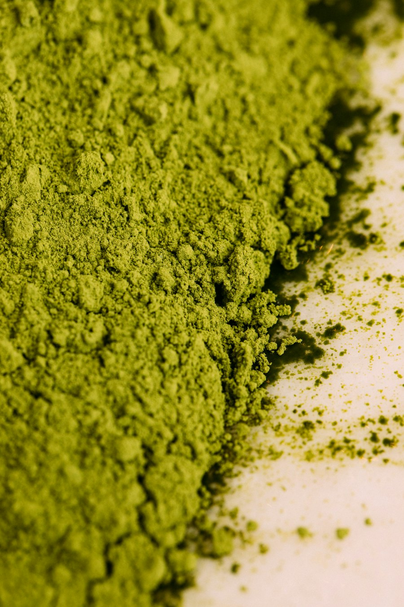
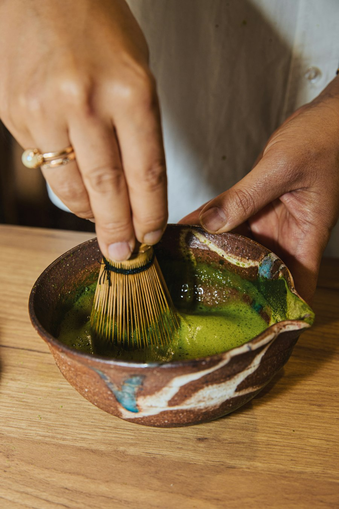
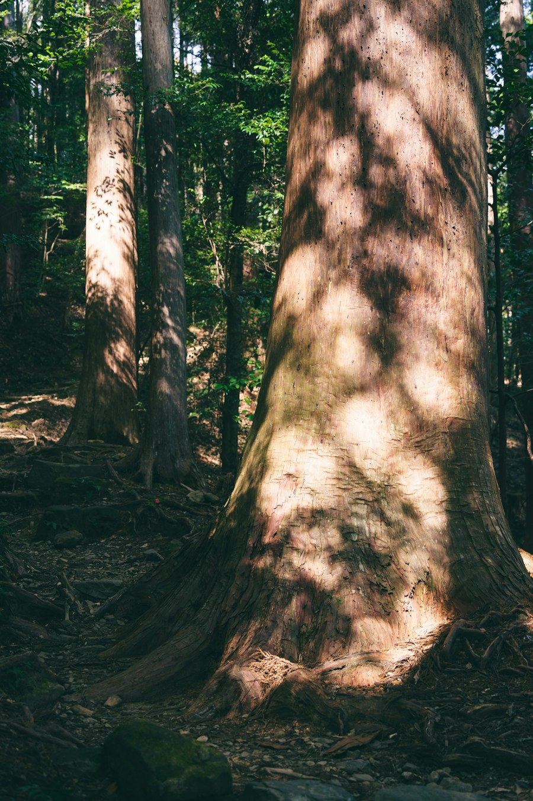
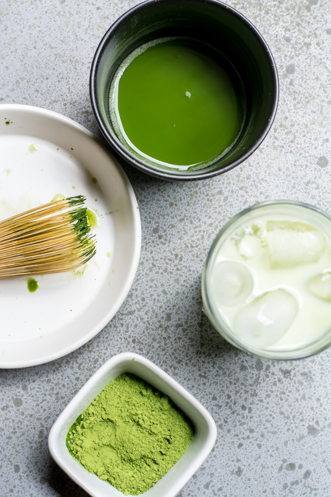
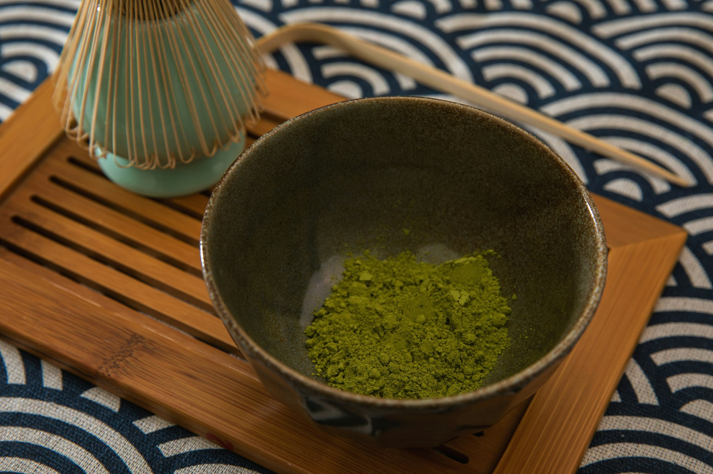

Est. Japan
WAKA MATCHA
A Rare Expression of Japanese Matcha.
Tradition, refined. Elegance in every bowl.
Discover WAKA
Our Heritage
Rooted in Nara.
Refined by Tradition.
From the historic Yamato tea region of Nara, WAKA MATCHA brings together generations of Japanese tea-growing knowledge and a deep respect for craftsmanship.
Cultivated in partnership with dedicated family growers, its shade-grown leaves are carefully processed and traditionally stone-milled in Japan — yielding a vibrant matcha celebrated for its layered umami, natural sweetness, and refined character.
Cultural Heritage
Honored in Japan's Sacred
and Tea Traditions
Selected for use at a revered Shinto shrine in Japan, WAKA MATCHA embodies the refinement and respect for tradition cherished by Japan's tea ceremony masters.
Its craftsmanship reflects the timeless values preserved through the iemoto tradition — the hereditary families entrusted with passing down the art of Japanese tea.

The Art of Matcha
More Than Tea.
A Timeless Ritual.
Matcha is more than a beverage. It is an expression of harmony, mindfulness, and the beauty of Japanese tradition.
From its vibrant green color to the delicate art of whisking, every bowl invites you to experience a moment of quiet refinement.

Wellness
The Natural Goodness of Matcha
A centuries-old tradition, appreciated in modern life.
Natural Tea Polyphenols
Matcha naturally contains tea polyphenols, including catechins such as EGCG — compounds studied for their antioxidant properties.
Mindful Energy & Focus
Matcha naturally contains caffeine and L-theanine, two tea compounds studied for their roles in alertness and attention.
The Whole-Leaf Experience
Unlike traditionally steeped green tea, matcha is made from finely ground tea leaves whisked into water — allowing you to enjoy the leaf itself.
Please note: matcha naturally contains caffeine.

Exclusive Access
An Exclusive Invitation
WAKA MATCHA is available through private inquiry.
For purchasing information, please contact SHOWCASE TOKYO. Our team will be pleased to share further details and guide you through the ordering process.
Request to Purchase